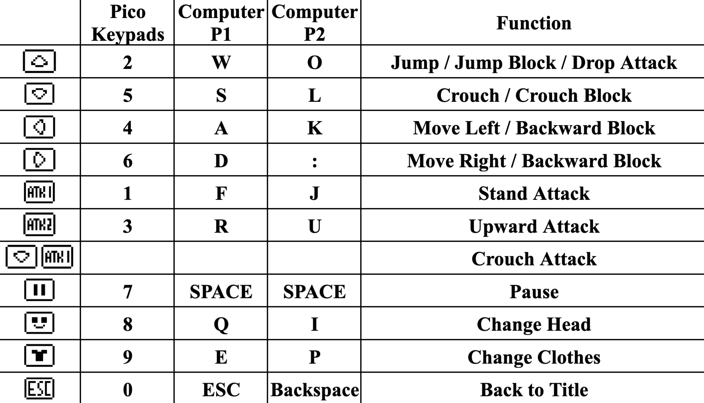
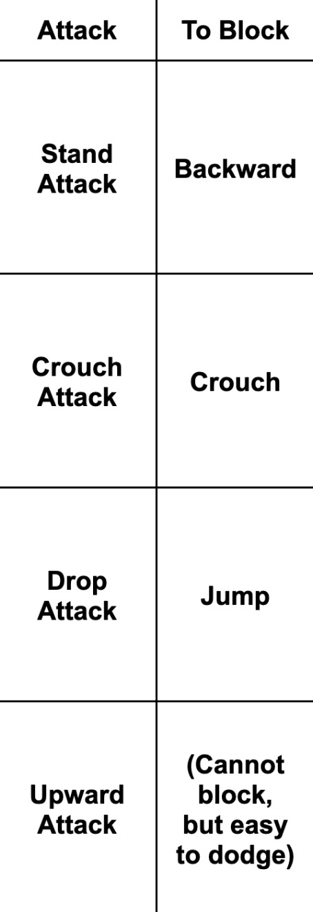
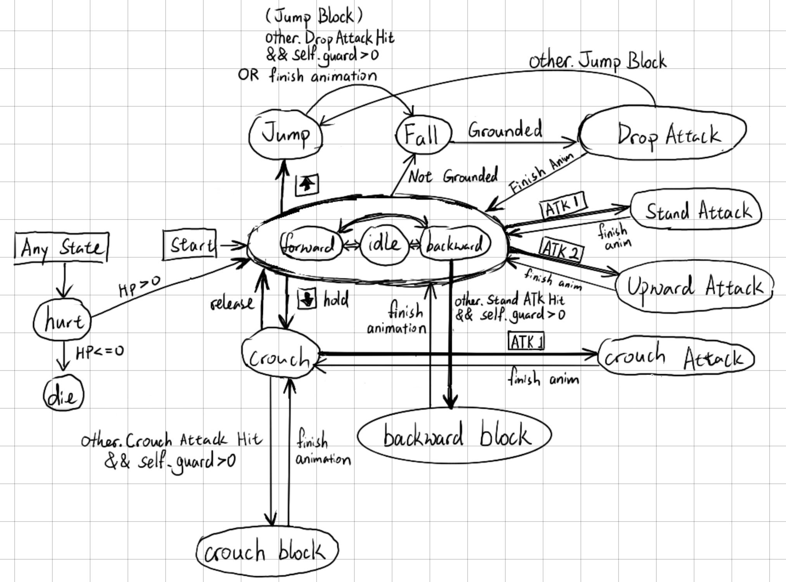
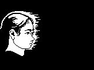
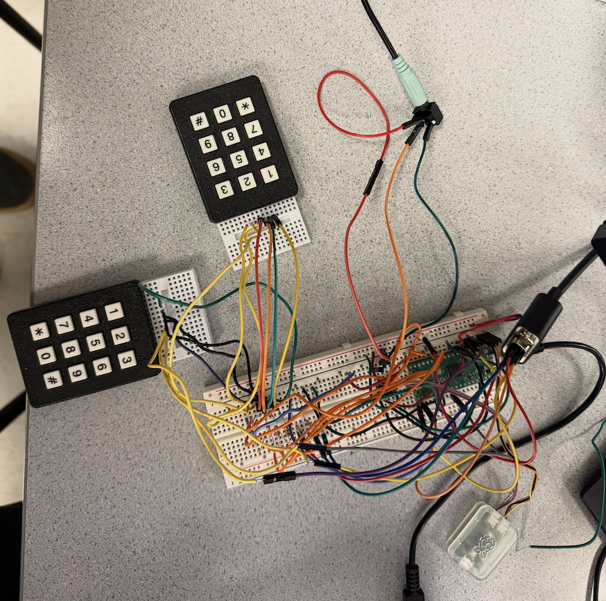
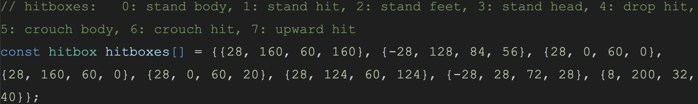
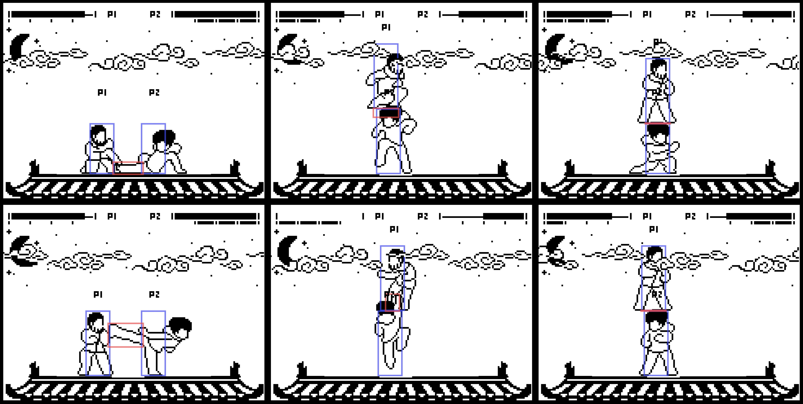

Digital Systems Design Using Microcontrollers (ECE 4760) Final Project By Albert Sun (ays48), Edwin Dake (ed433), Zoey Mo (zm73)
⬆ Click
the game area above to play a computer version of our project!
Note: both players need to be pressing the same non-menu key to start.


Welcome to Pico-Fight
Demonstration Video
Our final project for ECE 4760 is a strategic two-person combat game inspired by the open source fighting game
"Footsies", a simple game designed to test the players spacing, timing and combat skills.
Our build leverages the Raspberry Pi Pico microcontroller connected to a VGA screen for visual display, with
player input handled through keypads inputs. The game allows players to execute a variety of combat maneuvers,
including attacks, blocks, shields, jumps, and crouches. The combat takes place in the critical "no man's land"
between fighters, where positioning and tactical decisions determine victory or defeat. The Pico microcontroller
processes player inputs with minimal latency, ensuring a responsive and fair competitive experience. Whether
you're trading blows at mid-range or executing a perfect defensive maneuver, the system offers an engaging and
intuitive gaming experience that captures the strategic depth of spacing-based combat games.
Figure 1: Team pic - Edwin, Zoey and Albert (from left to right)
High-level Design
Rationale
Our goal for this project was to create a fun fighting game run off the Pico microcontroller. To do this
we drew inspiration from the open source fighting game "Footsies", a simple game designed to test the players
spacing, timing and combat skills.
Taking the core moves and sprites from the game, we built our own game with new mechanics, art and sound effects.
UI Structure
Below shows the various UI screens and the state machine controlling the transistion between the UI screens. When
the game boots up it will display a title screen. From here, the players can press any key to enter the menu
screen where the players
can customize their character models and clothing. From here, both players can press the same key to enter the
game. Within the game, the players
can choose to pause the game and return to the title. When a player wins, the game will display a win screen based
on which character won.
Due to the amount of possible interactions between the player, we implement another state machine to
handle the game logic. At a high level, each player is in one of three possible positions: idle, crouching or
jumping.
Each of these positions has a set of possible actions that can be performed and rules that dictate the
interactions between the players.

Figure 3: Game logic state machine
Idle
The idle state is the base state that each player starts in. In this state, the player can walk left or right and
has access to
a kick attack and a uppercut attack. In this state, the player can also block other standing attacks with shield.
Jump
The jump state puts the player in the air. While in the air, if the player lands on the opponent, they will
perform a 'drop attack'.
A player is also able to block another 'drop attack' by jumping at the same time.
Crouch
The crouch state causes the player to duck. In this state, the player can perform a crouch attack and block other
crouch attacks.
Shields / Hits
From each state, a player can be hit and will take damage. If a player is hit, no matter what state they are in
they will enter a 'hurt' state.
After the 'hurt' animation plays out, the player will return to the idle state. If a player takes damage, their
health
decreases depending on the attack. When a players health reaches 0, they lose the game.
An important mechanic in the game is the shield. Each player starts the game with 3 shields and can
use them to block different attacks. For the shield to be effective, the player must be performing the correct
action
before being hit (the blocks are shown above). If a player shields an attack, they will not take damage however
they will
lose a shield. If a player runs out of shields, they will take damage from any attack. To get shields back, the
player must
hit the opponent when the opponent shield. This adds a layer of strategy to the game as players must decide when
to shield and when to attack.
Figure 4: Health and Shield bar. Health on top, shield on bottom
The above figure displays the health and shield bar. The shield bar can be distinguished by the 3 sections,
each representing a shield.
Sprites and Art
The player sprites were drawn over the original footsies sprites using Procreate (iOS) and PixelStudio (Android).
The visual style is intentionally minimalist, limited to black and white. This allowed us to keep the same
outlines however different heads and clothing models from the Footsies game. To integrate these assets into our
game, we wrote a Python
script that converts each sprite into a two-dimensional C array.
For memory efficiency, our drawSprite function in C only takes the coordinates of either only black pixels or only
white pixels depending on which one is fewer, and renders those, effectively outlining the sprite without needing
to store full image data. Most of our animations consist of multiple frames – such as a five-frame attack sequence
(Figure 4.). For each frame, we store an array of pixels (Figure 5.), with each pixel representing a displacement
from the origin position of the player. This origin position is defined at the center of the player on the ground.
Offsets are scaled by 4 to make sprites look bigger on screen.
Figure 5: Sample attack animation sprite sheet - Left: Reference sprite sheet from footsies. Right:
Our sprite sheetFigure 6: Equivalent C arrays for each sprite in the attack animation (figure 4)
In addition to the player sprite sheets, the game also includes a variety of art for the various display screens
and background parts. Each of these components was stored in similar C arrays and drawn modularly rather than
as a whole because many
either need to move (eg. background clouds) or need to be switched around (eg. character select screen).

Figure 7: Title screen sample head. Only the white part was recorded and rendered.Figure 8: Figure 4. The fillings of background clouds.
Converted to black for mass png-to-array conversion, but drawn in white on pico.
Background Music
Behind the game, we have a looping background music track.
Concept: let 0=pause, 1=C, 2=D, 3=E, 4=F, 5=G, 6=A, 7=B, then the melody becomes
4760 447760 2 4760 447760 2 which represents ECE4760 group 2.
In addition to the background music, we also have a set of sound effects that play
when the player performs an action. These sounds include: whoosh sound when the player attacks,
thud sound when the player is hit, shield sound when the player blocks, announcer sound when the game starts.
Hit Sound:Shield Sound:Announcer "Fight":Whoosh Sound:
Program/Hardware Design

Figure 9: A photo of our hardware.Figure 10: Circuit Diagram.
The input to the game utilizes 2 keypads. These matrix-like keypads work by setting the columns of the matrix high
one at a time. By then checking which GPIO receives an input we can determine which key is pressed at any time.
Because we needed many GPIO pins to write to the VGA screen and DAC we decided to let both keypads
share the same scan GPIO keys. That way we save on GPIO pins and a single scan
allows us to check both keypads.
For the audio, we utilize both channels of the DAC to
play sound effects and music. Initially, we struggled to play both sound effects and
music at the same time without significant noise. By utilizing stereo speakers, we can plug one DAC channel into
the right speaker and
one into the left. This minimizes the amount of interference between the sound effects and music and also allows
both
to play at the same time.
Player States and Frames
As with most fighting games, all of the timing is based on a frame timer system. Each frame corresponds to a step of
the game. Within one frame, we must parse inputs, check for all interaction between the players then update the VGA
screen. Utilizing frames also allows us to play the animations for the proper amount of time. For example the ‘hurt’
state in the figure below is a sequence of 4 sprites. When a player enters the ‘hurt’ state, we can simply draw one
sprite per frame to complete the animation.
Figure 11: Frames of hurt
Each player is represented by a struct consisting of many variables making up the player's current state. The
state of a player consists of information about the players game status (eg. health, shield, hitbox) as well as
what animation should be played on a given frame (eg. state, frame)
Figure 12: Player States.
The player state is updated every frame. Each frame, we check the inputs of both players and update the player
state accordingly. For example, if a player presses the left key, we will update the player x to position to the left. Each
state has a unique animation associated for it. For example, when a player attacks we will set the player state to attack. This
state corresponds to the set of frames for the attack animation. Each frame is then drawn sequentially until the attack has reached
the last frame. For attacks, we also need to check if the attack hits the opponent. This is done with our hitbox system. Each attack
has a hitbox associated with it which we use to check collision.
Playing sounds
There are 3 types of sounds in our game:
background music from note frequency arrays through time interrupts,
sound effects from note frequency arrays through time interrupts (The beep in menu screens)
sound effects from .wav files through DMA.
To play arrays of note frequencies through time interrupts, similar to lab 1, we compute the current increment
amount and update the accumulator according to current frequency:
phase_incr_main_0 = current_frequency * two32_fs and phase_accum_main_0 += phase_incr_main_0
The BGM and sound effects of notes share the same channel, so only one of them is being played. However, the
counter for BGM does not pause while sound effects are being played, so that in theory it sounds as if the BGM is
always playing and only happens to be unheard sometimes since the sound effect is too loud.
A set of complex sound effects utilize DMA channels to be played. These sound effects include the whooshing sound
of attacks, the shielding sound and the hurt sound. In addition, at the start of each match the game will yell
‘Fight’, which is also an effect played through DMA. We accomplished this by first converting the .wav files of
the sounds found on free sound effect websites into C arrays. Each sound effect was then assigned 2 DMA channels,
a control channel and data channel such as the hit sound effect below.
hit_chan = dma_claim_unused_channel(true);
hitctrl_chan = dma_claim_unused_channel(true);
When the control channel is triggered, it is pointed to the data channel. The data channel then points to the
location of the C array for the sound. The array is then transferred to SPI to the DAC playing the sound effect.
The advantage of this is that the complex sound effects do not block the code and both complex sound effects and
background music can be played simultaneously
Collision and Hitboxes
One of the more challenging parts of implementation was checking hits and collisions. We utilize a hitbox system,
assigning each move and player a set hitbox. This is done in order to determine if attacks are valid or if the
players are colliding with one another. While we could have checked the pixel overlaps of the sprites themselves,
we found it much simpler to draw bounding boxes around the players and the moves. This allowed us to simplify the
detection of collision and attack hits by checking overlapping rectangles.

Figure 13: Hitboxes Array. {x_offset, y_offset, width, height} relative to player bottom center.
Each hitbox consists of {x_offset, y_offset, width, height}, where offsets are calculated from the bottom center
of a player’s xy position. To check whether two hitboxes are overlapping, we wrote a function bool
isOverlapping(short h1, short h2, short attacker), to which we pass the hitbox index of the attacker, hitbox index
of the potential victim, and the player index of the attacker.
Inside this function, based on each player’s current position and whether each player is flipped, we first
calculate the absolute positions of the x boundaries and y boundaries of the hitboxes as:
short h1y1, h1y2, h2y1, h2y2, h1x1, h1x2, h2x1, h2x2;
The final result is (x_overlap && y_overlap). For debugging purposes, we enabled
a function to draw the hitboxes on the screen as well. Below show a couple figures of the hitboxes for certain
moves. The hitbox both
allows us to check for attack hits as well as make sure that players cannot walk through each other.

Figure 14: Hitboxes Display
Results
An initial concern of ours was meeting the timing deadline of 10FPS
as we are performing many checks and VGA drawings however we did not have any problems throughout our development.
While occasionally we would suffer from noise in the sound effects, we found that after splitting the sound
effects and music into different speakers much of it was reduced. Another concern of ours was the collision checking.
We were worried that there would possibly be bugs in the collision checking causing players to get stuck, however this
was resolved with the bounding box system.
Playtesting
Of course because this is a video game, the goal is to make it fun. While we played it for many rounds and had
another group come play as well. The experience is smooth once you get used to the keypad controls.
The main feedback we received was with the balancing of the game, where certain strategies such as crouch attack
were too strong. With more playtesting, we could further balance the game by adding more moves and mechanics.
Conclusions
We are very happy with how the game turned out. We essentially created what we set out to do in the proposal which
was just a fun fighting game that ran smoothly on the Pico. In the future however we would like to add more moves
and features which we had initially thought of. For example we wanted to add ‘combo’ moves or extra movement
options such as dashing. While we didn't add any color to the art, we definitely could have changed the art style
to include color as we still had plenty of memory. The game however is still very smooth to run and more importantly
fun to play. We are very happy with the final product and are proud of the work we did.
While we did not use any code in the public domain, we did draw over art from the ‘Footsies’ video game. Footsies
is an open source game under the GPL-3.0 license allowing for derivative works.
Appendix A: Notices
The group approves this report for inclusion on the course website.
The group approves the video for inclusion on the course youtube channel.